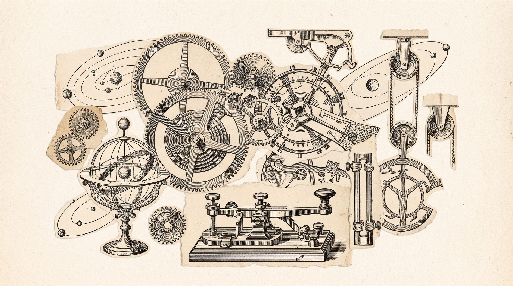

Produto
FOX
Assistentes de inteligência artificial integrados ao sistema de gestão da empresa. Primeira aplicação: provedores de internet por fibra óptica.
Em produçãoAssistente da equipe interna, via Telegram.
- Situação financeira
- Faturas e pagamentos do assinante. Consulta
- Credenciais PPPoE
- Usuário e senha de conexão, entregues apenas à equipe autorizada. Consulta
- Limpeza de MAC
- Libera o equipamento vinculado ao cadastro do assinante. Ação
- Sequência de reparo
- Executa os passos padrão de reparo de conexão. Ação
- Link de pagamento
- Gera o link da fatura para envio ao assinante. Ação
Em desenvolvimentoPróximas entregas.
- Assistente da direção
- WhatsApp. Financeiro, produção dos técnicos, equipe e inadimplência. Em construção
- Assistente do plantão
- WhatsApp. Recebe e executa os pedidos dos técnicos. Em construção
- Painel de quedas
- Quedas recorrentes, anomalias e risco de cancelamento. Em testes
- Localizador de rompimento
- Estima o ponto de rompimento da fibra a partir dos clientes que caíram. Em projeto

ArquiteturaComo a FOX se conecta e decide.
- Integração
- IXC Soft, por API.
- Modelos
- Anthropic como principal, OpenAI como reserva.
- Identificação
- Apresenta-se como inteligência artificial.
- Confirmação
- Ações que alteram dados exigem confirmação, com prazo de expiração.
- Registro
- Log de auditoria das ações executadas.